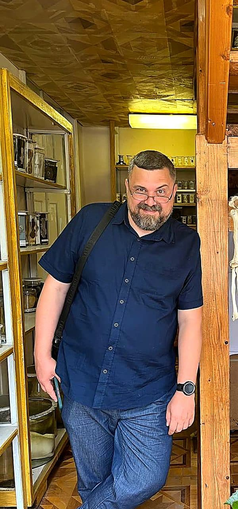

Тривога і страхи
Постійне відчуття загрози, панічні атаки, нав'язливі думки, які не дають спокою.
Клінічний психолог · КПТ · Онлайн
Це відчуття не зникло — воно просто чекає, поки ви його знайдете!
Я допомагаю людям, які застрягли у тривозі, втомі або болючих стосунках — знайти вихід через структурну роботу з мисленням і поведінкою.

Для кого
Постійне відчуття загрози, панічні атаки, нав'язливі думки, які не дають спокою.
Порожнеча, апатія, відчуття що нічого не зміниться і зусилля безглузді.
Повторювані болючі патерни, залежність від схвалення, відчуття власної недостатності.
Хронічна втома, неможливість відновитись, роздратованість і відчуття глухого кута.
Корисні матеріали
Ці матеріали створені на основі клінічних протоколів. Вони не замінюють терапію, але дають перше розуміння та конкретні кроки.
Що робити під час атаки прямо зараз: дихання 4-7-8, техніка заземлення 5-4-3-2-1, м'язова релаксація та профілактика.
Читати посібник →Науково підтверджена інформація: симптоми, нейробіологія, мінімум на день, пастки та поради для близьких.
Читати посібник →Обсесії, компульсії, механізм замкненого кола, ERP-терапія (золотий стандарт) та розвінчання міфів.
Читати посібник →Для фахівців за монітором: механізм TTH, ергономіка, КПТ-стратегії, PMR, таймер перерв та червоні прапорці.
Читати посібник →Науковий посібник на основі CBT-I: когнітивна модель безсоння, 5 методів, алгоритм дій, протокол 14 днів та Sleep Diary.
Читати посібник →Про мене
Я — клінічний психолог і психотерапевт, який працює в рамках когнітивно-поведінкового підходу (КПТ). Обрав цей напрям не випадково: КПТ — це одна з найкраще досліджених і ефективних форм психотерапії, де є чіткість, структура і вимірюваний прогрес.
Мені важливо, щоб терапія була не просто розмовою про проблеми, а реальною роботою: ми розбираємось, як влаштоване ваше мислення, де воно вас підводить, і що конкретно можна змінити.
Я працюю онлайн з людьми з усього світу. Зараз я приймаю обмежену кількість клієнтів безкоштовно — якщо ви в ситуації, де фінансовий бар'єр є реальним, напишіть мені, і ми обговоримо це особисто.
Одна сесія триває 60 хвилин. Перша зустріч — це можливість познайомитись, без жодних зобов'язань.
Процес
Ви пишете мені в Telegram або email. Коротко розповідаєте, що відбувається — я відповідаю і ми домовляємось про час.
Знайомимось. Я слухаю, ставлю питання, розбираємось з вашим запитом. Разом вирішуємо, чи є сенс продовжувати роботу.
Зустрічаємось раз на тиждень. Між сесіями — невелике домашнє завдання. Прогрес помітний і відчутний.
Питання
Так, але я приймаю обмежену кількість безкоштовних клієнтів — вибірково. Якщо фінансовий бар'єр є реальним для вас, напишіть і ми поговоримо особисто. Я не питаю доказів, просто ситуацію.
Відеозв'язок — Google Meet або Zoom, на ваш вибір. Достатньо тихого місця і стабільного інтернету. Локація не важлива — я працюю з клієнтами з різних країн.
Когнітивно-поведінкова терапія — це структурований підхід, де ми працюємо з думками та поведінкою, які підтримують ваш стан. КПТ добре досліджена при тривозі, депресії, стресі. На першій сесії ми разом зрозуміємо, чи підходить вам цей підхід.
Залежить від запиту. КПТ зазвичай коротша за інші підходи — від 8 до 20 сесій для конкретних проблем. Ми обговоримо орієнтири після першої зустрічі.
Так. Все, що відбувається на сесії — залишається між нами. Це основа терапевтичних відносин.
Українською або російською — на ваш вибір і комфорт.
Контакт
Напишіть мені — коротко або докладно, як вам зручно. Я відповідаю протягом доби.